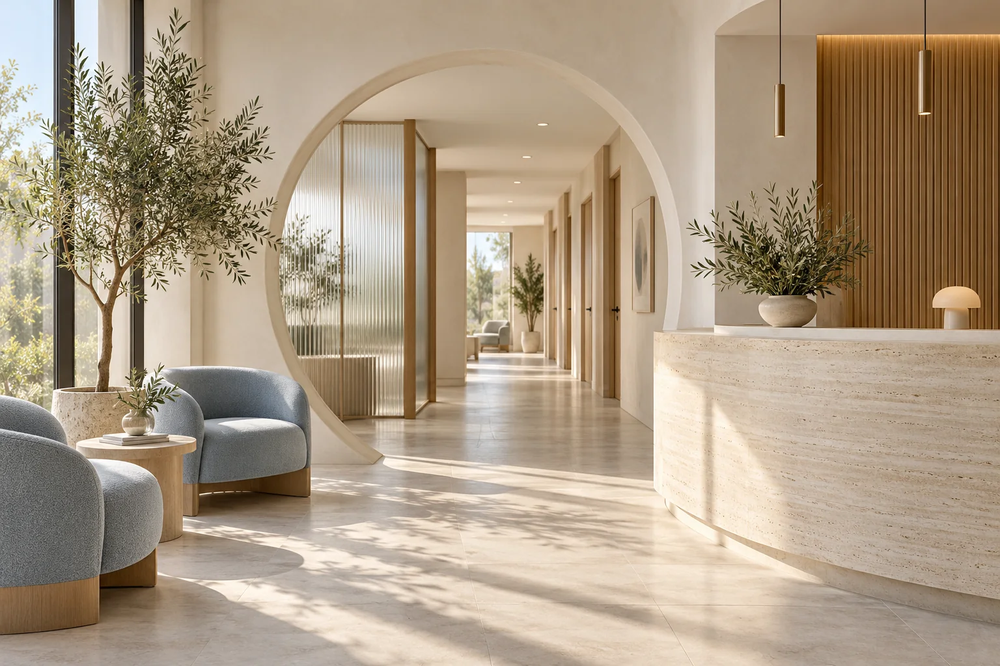

Elige tu consulta
Compara las especialidades y conoce qué incluye cada opción antes de elegir.
LÚMINA / UN ESPACIO PARA TI
Consulta general, dermatología y nutrición. Empieza por encontrar el espacio para ti.

Agenda de muestra. Sin datos personales ni citas reales.
ENCUENTRA TU ESPACIO
Explora el tipo de consulta, lo que incluye y su costo de ejemplo. Sin pasos de más.
Servicios, duraciones y precios ilustrativos en MXN. Esta demo no ofrece atención ni orientación médica.
ASÍ IMAGINAMOS EL CUIDADO
Compara las especialidades y conoce qué incluye cada opción antes de elegir.
Consulta días y horarios en una agenda sencilla. Aquí puedes probarla sin registrarte.
Revisa el resumen con especialidad, duración y costo. En esta demo, todo se queda en una simulación.
UN ESPACIO PENSADO PARA LAS PERSONAS
Luz natural, materiales cálidos y una experiencia sin ruido. Así imaginamos Lúmina: desde el primer clic hasta la puerta del consultorio.
La clínica y su imagen son ficticias. Un sitio real mostraría aquí su dirección, equipo y credenciales verificadas.
ANTES DE EMPEZAR
No. Lúmina es una demo de Nordra Studio. Puedes recorrer la agenda, pero no se reserva ni envía ninguna cita.
Son ejemplos para mostrar cómo comunicar costos y disponibilidad. No representan una oferta de servicios médicos.
No pedimos nombres, teléfonos, síntomas ni información clínica. La selección de la agenda se mantiene únicamente mientras exploras esta página.
Sí. Cuéntanos qué necesitas para definir el diseño, contenido e integraciones de tu proyecto. Las funciones de esta demo son ilustrativas; el alcance se acuerda en la cotización.